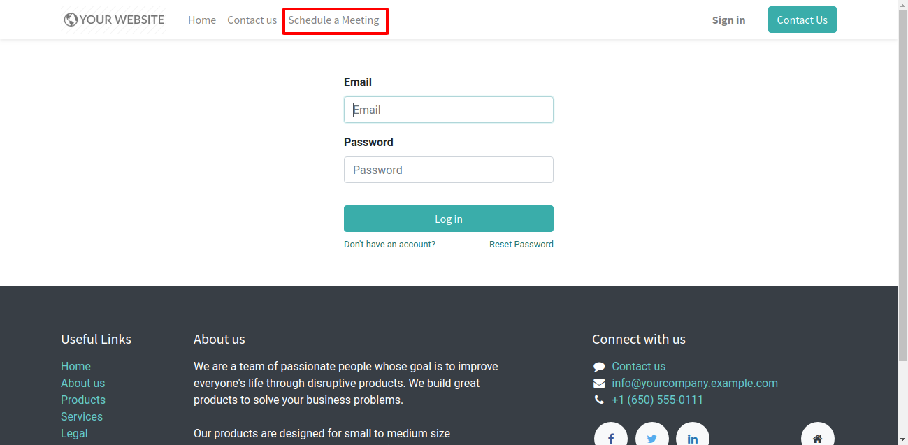
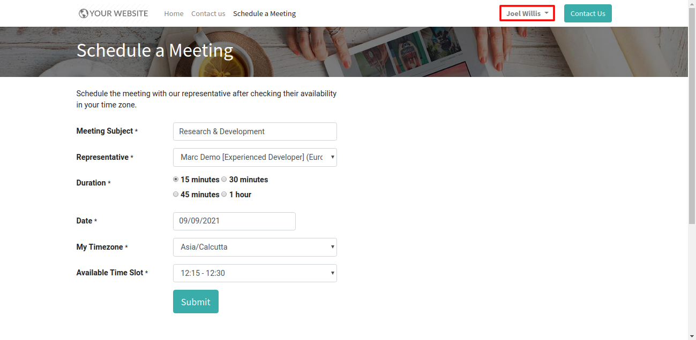
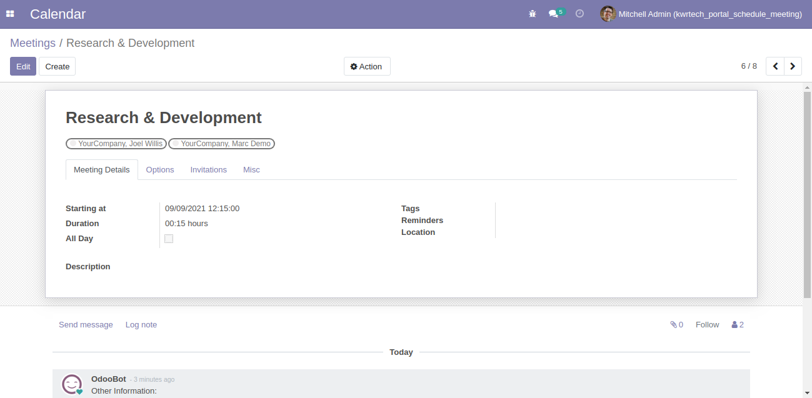

Schedule Meetings from Portal
Allow your customers to schedule meetings with you after checking your availability in their time zone.
After installing the module, new menu Schedule a Meeting will become visible.

A form, as shown below, will be visible to the portal users/customers when they gets logged in.
Available time slots are calculated after considering already scheduled meetings from the representative's calendar.

Below is the record accessible under the Odoo Calendar app.
